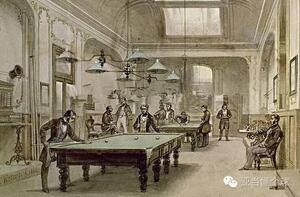

撞球運動是一種高尚優雅的室內運動，早年歐美流行於上流社會，為一些名流所熱衷，至於源起何時，尚無明確資料可尋。由歷史資料判斷，十四世紀初，撞球已興起於英國及法國，當時僅流行於歐洲之宮廷，因此撞球又稱為「宮廷球』，法王路易十四世，曾遵醫生之囑作撞球運動，歷史文獻迭有記載，乃至路易十六，英國之詹姆士一世，皆狂熱於此運動。在撞球桌出現以前，人們是在戶外的地上玩一種被稱為滾球的遊戲，後來這種遊戲被人移到室內的台桌上。不久桌面上被人們開了幾個洞，於是使得這種室內桌上遊戲的趣味性大增。
撞球運動發展至今已有五、六百年歷史，撞球究竟起源於哪國？有的說是古希臘，有的說是法國，有的說是英國，也有的說是中國，意大利和西班牙等等眾說紛雲，其實都是根據傳說，所以很難肯定。但是，撞球起源於西歐是無可爭辯的事實。
撞球在公元十四世紀，在英國的英格蘭維多利亞女王時代，撞球活動非常受人們的重視，在一些富豪家庭裡，不僅有豪華講究的撞球室，而且在進行打球活動時，還有嚴格的活動禮節，有的規定至今仍在沿用。如在打球時，有客人來，必須輕輕開門入室，不得高聲談話和喧叫，以免影響打球人的沉靜思考。又如在打球時，可以要求對方不要正面對著自己或靠近自己站立，不允許隨便揮舞球桿等不文明的舉動等。撞球是一種高雅的活動，現在撞球廳、室，也都有類似的不許高聲喧嘩和吸煙等明文規定。 由於法王路易十四的御醫建議國王餐後做撞球活動，有利於健身因此得到法王喜愛和關心，所以在十七世紀，撞球在法國逐漸風行起來，而撞球 ( Billiards ) 的名稱亦是來源於法語。這可能就是撞球起源於法國的根據。
自從撞球出現至今已有幾百年的歷史，並不是一出現就盡美盡善，而是在長期流傳中經過人們的不斷改進豐富，現已達到了比較完善的程度。從前開始在室內桌子上玩球時，在桌子中心開了一個圓洞，後來又在桌子四角開了四個洞，洞的增加同時也激發了人們的玩球興趣，直到在桌子開了六個圓洞。才演變成了今天落袋式撞球檯的雛形。在球檯的發展過程中還有過八角形球桌，在桌每邊開洞。共有八個洞，洞增多了，一盤球可以多容納幾個人來參加。
根據記載， 世界上第一張撞球桌大約出現在 1400 年，當時的球桌上沒有袋，只有象牙做的拱門(PORT)或門柱(KING)。1510年撞球出現在法國時，法王路易十四在凡爾賽宮玩的撞球是「單個球」( Single Pool -比賽雙方各自有一顆母球 )，當時便是在球桌上放一個用象牙做的拱門(Port)和一根象牙立柱叫「王」(king)，用的是 勺形棒來打球，把球打進門或碰到KING上便可得分。直到1735年改成使用 "直式球桿"，才大大的提高了擊球的準確性。
到了十九世紀初，撞球運動的發展開始走向成熟階段，在技術提高的同時，設備用具也隨之發展，許多大大小小的改進和發明創造不斷湧現。首先，關於球桿的皮頭的發明與改進，史料上的記載是在1798年發明的，另外還有一個傳說 : 十九世紀初以前所用的是禿頭球桿，後來有一位駐印度的法國士兵"明誇特"( 或翻譯為"米佳" )，在他受處罰時，強制長時間被迫練習中，他發現木製球桿的禿頭不好用，便在禿桿頭上加一塊皮頭，經過試用效果很好，便開始推廣了。此後，直到1818年英國人發明了巧克粉，可以防止球桿擊球滑桿，從此球桿便可以隨心所欲地打出各種旋轉球。其次，在球檯方面，原來用的球桌就是普通的木板桌子，因受氣候影響木材容易變形，檯面平整很難保證，直接影響擊球技術的發揮。於是大約在1827年開始將綠色桌面下的木質台面改成採用石板做球檯檯面，才有了光潔平整不變形的高質檯面，使得撞球在桌面上滾動得更加平穩、快速。
球檯的台邊，最初是用毛屑或棉花包裹起來釘在木製台邊上來用。因為沒有彈性只能起到一種緩衝撞擊的作用。到1831年才開始採用橡膠取代了木質台邊，而使得撞球在台面內借助台邊大範圍走位變得容易。1835年美國人"費侖"、1854年美國人"沙波尼蘭"先後改進並發明了彈性良好的正規橡膠台邊。撞球所用的「球」也有一段發展過程。最早使用的撞球，是用木材或黃銅做的，後來受印度象牙裝飾品和高級用具的啟發，因此象牙也被選用做撞球材料了。一隻象牙平均只能做五個球，製好的象牙還需挑選重量和大小，使每一組球相同，由於撞球質量要求高，圓度要圓，每個球的重量要求要同，因受產品合格率的影響，根據當時需要估計，每年要有萬餘頭大象的牙才能解決，用量之大實在可觀，因此價格十分昂貴。只能供王室貴族少數人享用，這使當時的撞球運動僅成為上流社會的娛樂活動，只有少數人參加撞球運動，嚴重的阻礙撞球運動的普及與發展。
直至1868年撞球在西方國家廣泛發展，撞球的需求也隨之巨增，紐約一家撞球公司便自願拿出一萬美元賞金，徵求象牙球的代用品。被譽為美國塑料工業之父的"海亞特( John Wesley Hyatt )"，它使用化學方法將 硝化纖維素，樟腦及酒精適量的混合，製成了熱可塑性塑膠，成功研製出塑膠撞球，這項發明促進了撞球製造工業革命性的變化。同時也對撞球運動事業的發展，作出了巨大的貢獻。因此，海亞特 也被美國撞球協會選進了撞球名人館。後來到了1920年，生產撞球業界又研發出使用化工原料( 碳酸樹脂 )製成的撞球，不但降低了生產撞球的成本，其產品的品質與色澤，更是明顯優於塑膠製球，自此之後，撞球也才真正成為大眾化的娛樂。